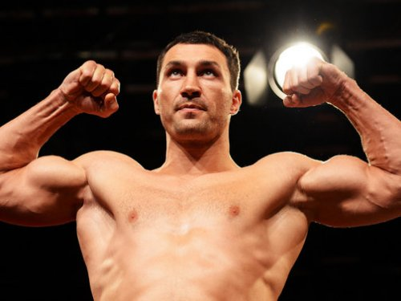

Володимир Володимирович Кличко |
 | |
Прізвисько: | Доктор Сталевий Молот | Громадянство: |
 Україна Україна |
Народився: | 25 березня 1976 (39 років) | |
Вагова категорія: | Cуперважка (більше 90.892 кг) | |
Тренер: |
Джонатан Бенкс | |
Рекорд боїв: |
68-64(54 KOs)-4 | |
| © Copyright 2016 ~ Volodimir Klitschko ~ All Rights Reserved. | ||
Дану сторінку розробив: Студент групи ОКС-305, Гніздюх Володимир,який навчається у технічному коледжі ТНТУ. Моя електронна скринька. Вконтакті Сайт Технічного коледжу |
||
| Останні новини Володимира Кличко: | |||
 |
У Ф'юрi знову змінили думку про бій-реваншПромоутер Тайсона Ф'юрі Мік Хеннессі повідомив, що бій-реванш між британцем і Володимиром Кличком усе ж може відбутися у травні, попри всі спростування цієї інформації, що лунали раніше.3 березня, 16:09 |
||
 |
Кличко отримав шанси виступити на ОлімпіадіПрезидент Міжнародної федерації любительського боксу Чінг-Куо Ву заявив, що на іграх у Ріо-де-Жанейро отримають право виступати й боксери-професіонали.2 березня, 19:13 |
||

| Кличко показав, як відпочиває перед підготовкою до реваншу з Ф'юріЕкс-чемпіон світу в надважкій вазі українець Володимир Кличко перед початком підготовки до матчу-реваншу з британцем Тайсоном Ф'юрі подорожує по всьому світу.2 березня, 13:39 |
||
 |
Ф'юрі брутально обізвав супертяжів із категорії КличкаБританський боксер Тайсон Ф'юрі вкотре похвалив себе і розкритикував всіх супертяжів.1 березня, 10:17 | ||
 |
У Кличка-молодшого розповіли про плани після реваншу з Ф’юріВолодимир Кличко роздумуватиме над участю в Олімпіаді після реваншу із Тайсоном Ф’юрі.26 лютого, 20:09 |
||
 |
Реванш між Кличком і Ф'юрі відбудеться не пізніше липняЧекати на помсту залишилося не більше п'яти місяців. Реванш між Володимиром Кличком і Тайсоном Ф'юрі відбудеться в період між травнем і липнем.23 лютого, 15:26 |
||
Більше новин тут |
|||